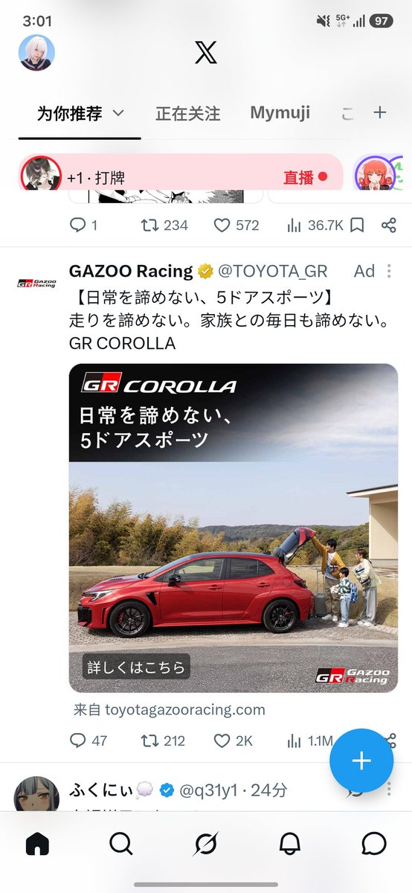

isla🌱
@IXXA00
操，这个车我是真想要啊，可惜国内没得卖。二十来万的车，平行进口落地，他妈能干到将近小 100 万，我操，真的有点抽象了。
家里就有台卡罗拉，从我上高中开始，我妈就开着这台车送我上下学，我永远都忘不了我在副驾驶坐着，拿我妈给我做的茄子烩土豆当早餐吃。tm 都开 20 年了，开块石头都能开出感情来了。
我准备到宁波，找个拆车厂，把后备箱切掉。😋

家人
@Yuiko114514
丰田你这广子，真就别给我推GR卡罗拉还有大皇冠了。老登快乐车是真不想要啊🤣🤣 https://t.co/zafTu1qBOw